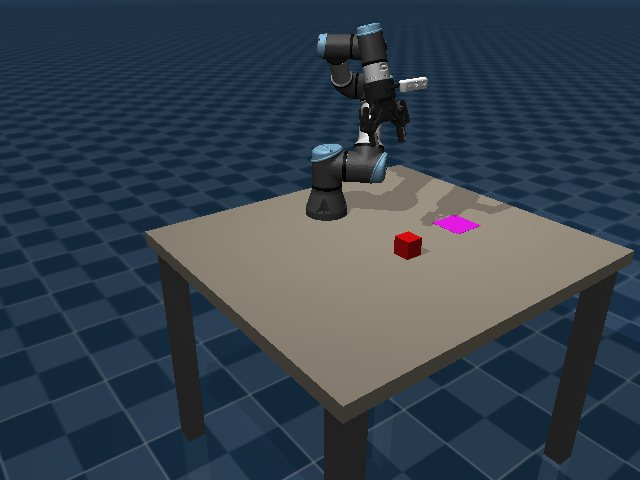
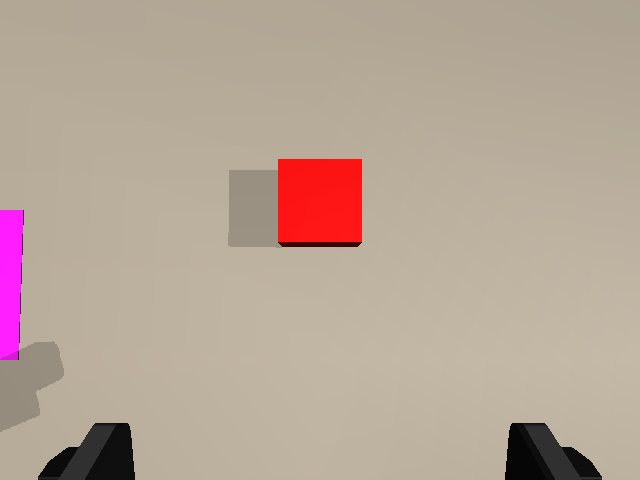
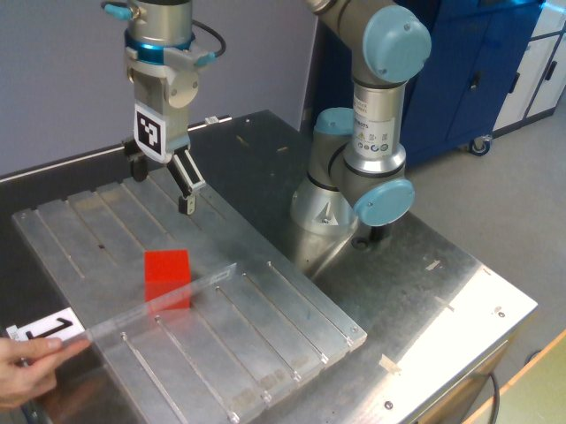
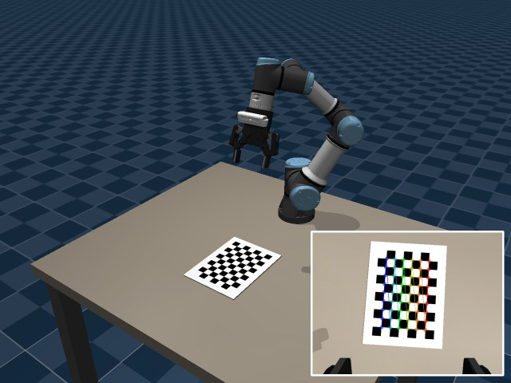
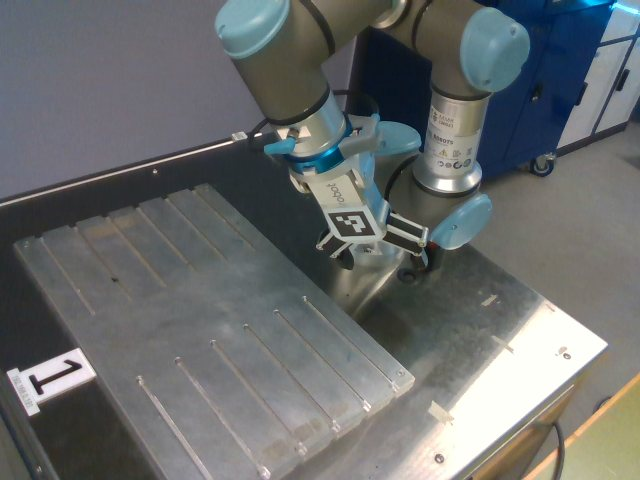

Following and picking a moving cube with a UR3e
University of Technology Sydney · 42043 Robotics Studio 1 · Integrated Project, Track B (personalised)
Abstract
A robot arm follows a cube that is being pushed across a table, decides from its own estimate when the cube has stopped, then picks it up and places it. The controller uses estimated states only. It runs in MuJoCo and on the lab UR3e. Beyond the required Track B pipeline, the project adds a moving target with a cube EKF, and a hardware implementation.
An active-perception extension on branch advanced, in simulation with a static cube and 1-3 occluders, estimates the occluders, takes up to two extra views when no grasp yaw is safe, and refuses the grasp if none is found. Over 50 trials, mid-motion failures fell from 21 to 0 and placements rose from 28 to 33, with 17 trials refused.
Results are from branch real at d78812e and branch advanced at 9ac8d1b.
A success in simulation means lifted more than 5 cm for 2 s, then at rest within 2 cm of the place zone. On hardware, completed means every state finished and the gripper reported a hold; placement was not measured run by run. See Real robot.
Demo
In the simulation panel, true values are read for display and scoring only; they never reach the pipeline. The lab footage is phone recordings. They are not matched to individual logged runs, may come from development versions of the code rather than the final one, and placement error was not measured. Run results are in Real robot.
System
Two loops run at different rates. The inner loop estimates and controls the joints at 500 Hz from encoder readings alone. The outer loop estimates the cube from RGB-D at 10 Hz and moves the joint reference. Simulator truth goes to one place only, the evaluator.
q̇_cmd = q̇_ref + 4 (q_ref − q) sent through speedJ.Task states: OBSERVE → TRACK (PBVS on the EKF until the cube stops) → APPROACH (PBVS to 60 mm above it) → DESCEND (open loop) → GRASP → LIFT → TRANSPORT → PLACE → RELEASE → RETREAT → RETURN.
Ground truth: sim.ground_truth() is defined in src/sim/env.py and read only in main.py (TrialMonitor and the display panel) and at the end of scripts/run_real.py --sim. Run grep -rn ground_truth src main.py scripts/run_real.py to check.



Part AModelling
Joint model
Each joint is modelled on its own as an inertia driven by the feedback torque and a lumped disturbance. Gravity is compensated separately, from a payload-free controller-side model.
\(J_i\) is the diagonal of the mass matrix \(M(\hat q)\), armature included. The model is discretised by zero-order hold at 2 ms, and the matrix exponential agrees with a hand-derived closed form (scripts/check_joint_ss.py). At the observe pose:
| Joint | pan | lift | elbow | wrist 1 | wrist 2 | wrist 3 |
|---|---|---|---|---|---|---|
| \(J_i\) (kg m²) | 0.2496 | 0.5275 | 0.2563 | 0.1145 | 0.1040 | 0.1002 |
| Largest gravity error from the 1.175 kg unmodelled payload (N m) | 0.000 | 6.646 | 4.248 | 1.888 | 1.569 | 0.095 |
| \(M_{ii}\) error, median over 500 poses | 19.5 % | 20.4 % | 24.9 % | 15.9 % | 18.4 % | 1.4 % |
Logs: chk_joint_ss, chk_ctrl_model.
Controllability and observability. With an encoder on \(q\) alone, the observability matrix has rank 3 for all six joints, in continuous and discrete time. So velocity and disturbance can be estimated from position. The controllability matrix of the full state has rank 2, because \(u\) cannot influence \(d\). That is why LQR is designed on the \([q, \dot q]\) subsystem, which has rank 2, and \(d\) is cancelled by feed-forward of its estimate instead.
Assumptions, and where they break. The diagonal model ignores coupling between joints, the payload and friction; all of these land in \(d\). A constant \(J\) was the assumption that failed: \(J_\text{pan}\) grows from 0.25 at the observe pose to about 0.52 at 0.41 m reach. A design fixed at the observe pose drops from 14.2 Hz, \(\zeta\) 0.84, to 9.5 Hz, \(\zeta\) 0.56 there, which matches the 9.3 Hz oscillation measured at the shoulder. Gain scheduling resolves it.
Cube model
The cube is rigid and flat on the table, with constant velocity plus white acceleration noise. The measurement goes through the camera projection, which makes the filter nonlinear:
The analytic Jacobian matches central differences to \(4.4 \times 10^{-11}\) relative error over 200 random states and poses (log). The velocity is not visible in one frame: \(H\) has rank 3. It becomes observable through the dynamics, and the observability matrix over the constant-velocity model has rank 5.
| State | Sensor | When the measurement is lost |
|---|---|---|
| \(q\) | Encoder, directly | Not lost in these runs |
| \(\dot q, d\) | Encoder, through the joint dynamics | Not lost in these runs |
| \(p_x, p_y, \psi\) | RGB-D, directly (with the camera pose) | Prediction only, and \(P\) grows. 1 s without frames costs about 2 mm on a straight path and 6 mm on an arc. |
| \(v_x, v_y\) | RGB-D, through the motion model | Sim: held constant. Lab: set to zero after 0.5 s, and no stop can be declared, because a coasting estimate led the arm 23 cm away from the cube in one lab run. |
Part BSensing
Frames
diag(1, −1, −1) converts to the OpenCV frame. The RTDE-to-simulation transform was checked against forward kinematics at two lab poses, 0.8 mm and 0.4° apart.Noise model and calibration in simulation
Encoders: \(\sigma = 0.5\) mrad and 14-bit quantisation; measured error std 0.507-0.518 mrad against 0.512 expected (log). Depth: \(\sigma_z = k z^2 / \max(\cos\theta, \cos 75^\circ)\) with \(k = 0.01\ \text{m}^{-1}\), from stereo triangulation error growing with \(z^2\); 1.4 mm at the observe distance. The value is of the order of a D435 and was chosen, not fitted. Also modelled: edge pixels dropped with probability 0.5, 1 mm quantisation, and RGB noise of \(\sigma = 2\) (log).
Calibration in simulation, noisy camera (scripts/calibrate_camera.py) | Result |
|---|---|
| Checkerboard views for intrinsics | 20 detected of 35 placements |
| Intrinsics error fx / fy / cx / cy, distortion fixed at 0 | +0.26 / +0.31 / +0.01 / −0.37 px |
| Reprojection RMS | 0.109 px |
Hand-eye error of the committed configs/camera_calib.json | 0.11°, 1.30 mm |
| Hand-eye error of a re-run on this commit | 0.15°, 2.04 mm |
Log: calibrate. Hand-eye uses cv2.calibrateHandEye (Park and Martin) over 15 views.

What calibration changes. The calibrated model places the cube in absolute terms about 1 mm worse than the nominal one, yet the place error is no worse: 1.2 mm against 1.6 mm median. Cube and zone were seen with the same mount error, so a fixed mount bias mostly cancels when they are subtracted (development measurement, 2026-10-16: cube xy 1.71 against 0.69 mm median, place error 1.4 against 1.7 mm). The bias also shows up as the high NEES in Part C.
Noise handling that real data forced
- Outlier trim. Depth noise pushed a few top-face points outside the true edge, stretching
minAreaRectto 55.8 mm and failing the 50 ± 5 mm size check on 7 of 100 scenes. Trimming 0.5 % per side took that to 100/100. - Top-face band on the D435i. At 0.9 m, a 5 mm band below the 98th-percentile height cut the 60 mm top to about 52 mm, and with the arm above the cube the mask picked up finger depth. The lab code selects the top face at its known height ±10 mm.
- Measured lab noise. At rest: 0.37 / 0.32 px, 0.65 mm depth, 1.5° yaw. So the lab EKF uses a yaw \(\sigma\) of 0.03 rad, not 0.01. Depth temporal std on the plate at 0.81 m was 1.45 mm, equivalent to \(k = 0.0022\).
Eye-to-hand calibration on the robot

scripts/auto_handeye.py chooses poses from a coarse solution, moves the arm, and runs a closed-form solve followed by joint reprojection refinement. The refinement is the reason for the added step: on synthetic data with a known answer, position error falls from 4.39 mm median (13.24 max) for Park to 0.54 mm (1.25 max) (log).
| Lab result (25 views, 40 mm marker) | Value |
|---|---|
| Reprojection error, mean / largest | 0.68 / 1.20 px |
| Bootstrap std, position and rotation | [0.47, 0.72, 0.51] mm, 0.039° |
| Repeat in the afternoon, same start and seed: change in camera pose | 0.2 mm, 0.028° |
| Depth minus predicted marker depth | +4.5 mm mean, 2.1 mm std |
These are repeatability figures, not absolute accuracy. The +4.5 mm depth offset is systematic and its cause is not settled: it may be D435i depth bias or the ruler-measured marker size.
Part CEstimation
The two filters match the two kinds of measurement. Each joint has a linear KF, since its measurement is linear. The cube has an EKF, since its measurement goes through the projection.
Joint Kalman filter
\(R = \sigma_\text{enc}^2 + \text{res}^2/12\), which gives 0.51 mrad, from the encoder specification plus quantisation. \(Q\) comes from continuous white noise on \(\dot q\) (0.05 rad/s/√s) and \(d\) (\(\sigma_d\)), discretised by Van Loan. \(\sigma_d\) was picked by sweeping it under a sinusoidal excitation:
| σd (N m/√s), all joints | q̇ RMS (rad/s) | NEES[q, q̇] (ideal 2) | NIS (ideal 1) |
|---|---|---|---|
| 3 | 0.035-0.296 | 1.37-140.06 | 0.93-10.57 |
| 10 | 0.063-0.210 | 1.31-20.64 | 0.89-3.14 |
| 30 | 0.095-0.157 | 1.26-3.96 | 0.84-1.43 |
| 100 | 0.100-0.219 | 1.14-1.55 | 0.76-0.98 |
| 300 | 0.156-0.404 | 1.06-1.27 | 0.65-0.83 |
| finite differences | 0.358-0.384 | - | - |
Consistency against responsiveness. The range across six joints, with 30 highlighted. Small \(\sigma_d\) cannot follow the disturbance and turns overconfident (NEES up to 140). Large \(\sigma_d\) passes more encoder noise into velocity. At 30 the KF beats finite differences on every joint. Log.
The controller deploys \(\sigma_d\) = (30, 30, 20, 10, 8, 8), not 30 throughout. This is a deliberate trade: in a development run on 2026-10-19 the wrist torque noise halved (about 2.1 to 1.0 N m) while hold error and success did not change, at the cost of overconfidence on elbow and wrist 2 under the same excitation (NEES 7.0 and 4.4).
Cube EKF
Predicted at 500 Hz, updated at 10 Hz. \(R = \text{diag}(0.5^2\,\text{px}^2, 0.5^2\,\text{px}^2, (1\,\text{mm})^2, (0.01\,\text{rad})^2)\), set above a measured static noise of about 0.3 px, under 0.5 mm and 0.006 rad. \(\sigma_a = 0.01\ \text{m/s}^2/\sqrt{\text{s}}\), \(\sigma_\psi = 0.01\). Innovations with NIS over 13.28 (\(\chi^2\), 4 dof, 99 %) are rejected; a third rejection in a row re-initialises from the measurement, which acts as a manoeuvre detector.
Why the error sits above the 2σ band. The filter is overconfident, and the cause is not noise. The fixed mount bias from calibration does not average out, while the EKF assumes white measurement error. Giving the filter the exact mount removes most of it:
| Camera model used by the filter | NEES median (ideal 5) | NIS (ideal 4) | Position RMS (mm) | Velocity RMS (mm/s) | Stops found | Stop delay (s) | False stops |
|---|---|---|---|---|---|---|---|
| Calibrated (1.3 mm, 0.11° off the truth) | 42.40 | 1.15 | 1.4 | 2.6 | 20/20 | 1.07 | 0 |
| Exact mount and nominal K | 6.98 | 1.21 | 0.6 | 2.6 | 20/20 | 1.07 | 0 |
Arm held at observe, seeds 0-19. Logs: calibrated, exact.
What if \(R\) were ten times smaller, or larger? Same frames, replayed offline:
| Cube EKF, straight motion | Position RMS (mm) | Velocity RMS (mm/s) | NEES median (ideal 5) | NIS / dim (ideal 1) | Rejected / re-initialised | Stop delay (s), stops found |
|---|---|---|---|---|---|---|
| R × 0.1 | 1.01 | 3.74 | 287.96 | 1.09 | 224 / 40 | 3.25 (4/20) |
| R × 1 | 0.98 | 2.14 | 40.33 | 0.29 | 80 / 40 | 2.22 (20/20) |
| R × 10 | 0.97 | 1.05 | 6.14 | 0.09 | 24 / 12 | 2.24 (20/20) |
Position accuracy barely moves, because the error is dominated by the bias. With \(R \times 0.1\) innovations match \(R\) on paper (NIS/dim 1.09), but velocity gets noisier than the stop threshold, so only 4 of 20 stops are found. With \(R \times 10\) NEES looks almost ideal, yet NIS/dim falls to 0.09: the filter is hiding a bias behind a large \(R\), not modelling it. The better fix is a better calibration. Log.
An additional estimator compared: KF, EKF, coordinated-turn EKF
Does the motion model matter? A world-frame linear KF (measurement back-projected first) and a coordinated-turn EKF (turn rate added as a state) were compared with the EKF on identical recorded frames, on three motions at 3-4 cm/s, seeds 0-19:
| Motion, filter | Position RMS (mm) | Velocity RMS (mm/s) | NEES median (ideal 5) | Stop delay (s), stops found | Error after 1 s without frames, median (max) (mm) |
|---|---|---|---|---|---|
| Straight, KF | 0.98 | 1.67 | 17.06 | 2.24 (20/20) | 1.72 (3.22) |
| Straight, EKF | 0.98 | 2.14 | 40.33 | 2.22 (20/20) | 1.99 (4.31) |
| Straight, CT-EKF | 0.98 | 2.21 | 40.31 | 2.22 (20/20) | 2.21 (5.90) |
| Straight, EKF σa 0.03 | 0.99 | 3.73 | 29.91 | 3.33 (4/20) | 3.30 (5.58) |
| Arc, KF | 0.97 | 1.92 | 16.99 | 2.21 (20/20) | 6.10 (10.67) |
| Arc, EKF | 0.97 | 2.27 | 39.44 | 2.21 (20/20) | 6.20 (11.47) |
| Arc, CT-EKF | 0.97 | 2.22 | 39.49 | 2.21 (20/20) | 2.98 (6.96) |
| Arc, EKF σa 0.03 | 0.98 | 3.78 | 28.75 | 4.95 (5/20) | 6.34 (11.81) |
| S-curve, KF | 0.95 | 1.78 | 16.67 | 2.22 (20/20) | 3.87 (9.91) |
| S-curve, EKF | 0.95 | 2.18 | 38.02 | 2.21 (20/20) | 3.84 (9.72) |
| S-curve, CT-EKF | 0.96 | 2.20 | 38.13 | 2.21 (20/20) | 3.12 (6.37) |
| S-curve, EKF σa 0.03 | 0.96 | 3.70 | 28.05 | 5.78 (8/20) | 5.05 (9.43) |
Result. With frames arriving, all four give the same position error to within 0.04 mm, so at 10 Hz the turn model adds nothing. It matters during a dropout: on the arc, the CT-EKF halves the error after 1 s (median 2.98 against 6.20 mm), and on a straight line it is slightly worse. Raising \(\sigma_a\) to 0.03 makes stop detection fail on most seeds. KF NEES is lower because its \(R\) is a separate estimate, which does not make it better. Log.
Not settled: 20 seeds with no significance test, one dropout per trial, CT parameters not swept, and the arc is the case CT is built for.
Part DControl
Joint LQR on the estimated state
Bryson weights state what is acceptable: \(q_\text{max}\) = 0.01 rad, \(\dot q_\text{max}\) = 1 rad/s and \(u_\text{max}\) = 20, 20, 10, 4, 4, 4 N m. The result is closed-loop bandwidths of 9.4-14.2 Hz with damping 0.77-0.84 at the observe pose. What limits raising them is encoder noise: it passes through the KF and appears as torque noise of about 4 N m on the big joints at rest. The KF is propagated with the torque actually applied after saturation, so clipping does not corrupt \(\hat d\).
| Test | LQR (Bryson) | PD (5 Hz) |
|---|---|---|
| Hold at observe, largest joint RMS error (mrad) | 0.4 | 0.3 |
| Same, without the d̂ feed-forward (mrad) | 3.7 | 12.8 |
| Quintic move in 2 s, largest joint RMS error (mrad) | 0.5 | 0.6 |
| 40 N m, 100 ms impulse on lift: peak deviation (mrad) | 12.2 | 18.3 |
| Recovery to within 10 mrad (s) | 0.148 | 0.194 |
| Peak torque while holding, lift / elbow (N m) | 16.3 / 16.2 | 12.7 / 15.1 |
Control effort against tracking. LQR rejects the impulse better; PD uses less torque while holding. Removing \(\hat d\) makes the payload error visible, more so under the softer PD. The disturbance feed-forward, not the feedback law, is what removes the steady error. Logs: LQR, PD.
Gain scheduling
Every 0.1 s, \(J = \text{diag}(M(\hat q))\) is recomputed, and the KF models and gains are rebuilt from it. In a development measurement on 2026-10-21 at 0.41 m reach, this took hover jitter from 0.43 to 0.24 mm RMS and removed the 9 Hz spectral peak, with pan torque noise up from 3.63 to 3.80 N m. It is a smoothness gain, and it does not move the success rate on the default task: 20/20 with it off, grasp offset 0.9 mm.
PBVS
The law is position-based because depth gives a metric cube pose directly. \(\lambda\) = 1.5 s\(^{-1}\), a 0.67 s time constant, well under the joint bandwidth so that the loops separate. \(\mu\) = 0.02. Limits are 0.03 m/s and 0.5 rad/s (0.15 m/s in TRACK). Without feed-forward, the lag would be \(v/\lambda\), about 1 cm at 1.5 cm/s. Feeding the EKF velocity forward brings hover lag to 0.8 mm RMS. Below 60 mm the cube leaves the wrist camera's field of view, so the last 65 mm of descent are open loop.
Velocity interface on the lab robot
The UR3e accepts joint velocity through speedJ, so the torque design does not carry over. The planning, PBVS and state machine code do. The lab loop is q̇_cmd = q̇_ref + 4 (q_ref − q), with these limits: 0.35 rad/s on any joint, 0.15 rad of tracking error, 0.5 m reach, and a predicted TCP height floor. Every exit path calls speedStop.
Part EIntegration and robustness
Repeated trials with varied conditions
Each seed draws a new cube pose, yaw, motion and encoder and camera noise, reproducibly. All runs below are on d78812e, from one script (scripts/evaluate_all.sh), with raw logs linked.
| Condition (L0, noisy camera, calibrated model) | Placed | Grasp offset median (mm) | max | Place error median (mm) | max | Time median (s) |
|---|---|---|---|---|---|---|
| Moving cube, TRACK, LQR (default task) | 100/100 | 0.7 | 1.4 | 1.2 | 2.6 | 27.1 |
| Moving cube, PD baseline | 20/20 | 0.8 | 1.2 | 1.1 | 1.8 | 26.8 |
| Moving cube, gain scheduling off | 20/20 | 0.9 | 1.5 | 1.2 | 2.4 | 26.9 |
| Moving cube, coordinated-turn EKF | 20/20 | 0.8 | 1.3 | 1.4 | 2.4 | 26.9 |
| Moving cube, noise-free camera | 20/20 | 0.9 | 1.4 | 0.9 | 2.3 | 26.8 |
| Moving cube, nominal camera (no calibration) | 20/20 | 0.8 | 2.3 | 1.6 | 2.2 | 26.9 |
| Static cube, look-then-move | 100/100 | 1.1 | 2.9 | 1.3 | 3.3 | 15.5 |
| Static cube, PBVS approach | 100/100 | 0.7 | 2.0 | 1.4 | 2.8 | 17.2 |
| Static cube, look-then-move, PD | 20/20 | 1.2 | 2.6 | 1.2 | 2.1 | 15.6 |
Logs: moving_lqr, moving_pd, moving_fixed, moving_ct, moving_noiseless, moving_nominal, static_open, static_pbvs, static_pd.
Stop was declared 2.04 s after the true stop (median; range 1.98-3.17 s), of which 2 s is the required window. EKF rejections across 100 trials: 2. Zone position is fixed in the moving task, and cube speed is modest there (1-1.5 cm/s) on purpose, so that the arm is seen following; the faster motions are below.
Disturbance: the cube moved during the approach
| Disturbance (static cube, seeds 0-19) | Look-then-move placed | grasp offset median (mm) | PBVS placed | grasp offset median (mm) |
|---|---|---|---|---|
| Cube pushed 15 mm at the start of the approach | 20/20 | 12.8 | 20/20 | 0.7 |
| Cube pushed 25 mm at the start of the approach | 0/20 | 26.6 | 20/20 | 0.8 |
| Camera mount wrong by 2° | 20/20 | 9.3 | 20/20 | 6.2 |
A 2° mount error: PBVS cuts the grasp offset (6.1 against 9.3 mm) but not the place error, since the zone is seen only once at OBSERVE. Moving-cube task under the same error: 20/20 placed, with EKF rejections up from 2 per 100 trials to 188 per 20. Logs: push_open, push_pbvs, push_open15, push_pbvs15, he2_open, he2_pbvs, he2_track.
Harder motion
| Motion at 3-4 cm/s, closed loop, seeds 0-19 | Placed | Grasp offset median / max (mm) | Place error median / max (mm) | Stop delay median (s) | Rejected / re-initialised |
|---|---|---|---|---|---|
| Straight, EKF | 20/20 | 0.9 / 1.6 | 1.1 / 2.3 | 2.61 | 80 / 40 |
| Straight, CT-EKF | 20/20 | 1.1 / 1.7 | 1.0 / 2.4 | 2.60 | 80 / 40 |
| Arc, radius 10-16 cm, EKF | 20/20 | 0.7 / 1.2 | 1.1 / 1.7 | 2.66 | 81 / 40 |
| Arc, radius 10-16 cm, CT-EKF | 20/20 | 0.7 / 1.5 | 1.1 / 2.2 | 2.66 | 80 / 40 |
| S-curve, EKF | 20/20 | 0.8 / 1.7 | 1.1 / 2.3 | 2.63 | 80 / 40 |
| S-curve, CT-EKF | 20/20 | 0.8 / 1.7 | 1.2 / 2.9 | 2.63 | 80 / 40 |
| Variable speed, short pauses, EKF | 20/20 | 0.7 / 1.3 | 1.4 / 2.4 | 2.53 | 142 / 68 |
| Variable speed, short pauses, CT-EKF | 20/20 | 0.7 / 1.4 | 1.1 / 2.1 | 2.49 | 140 / 67 |
The grasp is not sensitive to motion shape, since the arm picks after the cube stops. At 3-4 cm/s, the step in velocity at the start and stop of the motion exceeds the gate, which gives the rejections and re-initialisations. Stop delay rises from about 2.0 to 2.6 s; a causal link between the two was not tested. To watch one live, use scripts/watch_motion.py.
Where the stop test breaks
A constant-velocity filter cannot tell a pause from a stop, so the window length sets the limit:
| Mid-path pause | Stop declared early | Placed | Largest grasp offset (mm) |
|---|---|---|---|
| 1.0 s | 0/20 | 20/20 | 1.5 |
| 1.5 s | 0/20 | 20/20 | 1.7 |
| 2.0 s | 3/20 | 20/20 | 11.6 |
| 2.5 s | 17/20 | 14/20 | 27.0 |
| 3.0 s | 18/20 | 15/20 | 21.9 |
| 4.0 s | 20/20 | 16/20 | 24.2 |
Latency against false stops. With a 2 s window, pauses up to 1.5 s are safe and pauses from 2.5 s are not. Failures follow the early stops. A 1 s window was tried in development; it failed from 1.5 s. Motion is scripted (2-3 cm/s, seeds 0-19). Hence the lab uses 4 s, since a person pushing pauses longer. Logs: pause_2.5 and siblings.
Failures diagnosed during development
| Symptom | Traced to | Evidence and outcome |
|---|---|---|
| First end-to-end run, 13/20: state timeouts | Estimator: the settle test \(|\hat{\dot q}| < 0.02\) sat inside the velocity noise (std about 0.045 rad/s) | Averaged over 0.1 s, peak about 0.008. Fixed. |
| Zone reported incomplete after grasping | Sensing: the held cube covers the lower image | Zone view moved before the grasp. |
| PLACE timeouts at 0.46-0.49 m reach | Model: \(M_{00}\) 2.6-2.9 × the design value. Collision and singularity excluded (cond(J) 19-46) | Torque std 43 N m, 32 % saturated. Fixed by gain scheduling. |
| 7 of 100 noisy frames rejected | Sensing: outermost depth points stretched minAreaRect | Trim per side: 100/100. |
| Constant 0.71 px corner error | Frames: MuJoCo's principal point is (319.5, 239.5), not (320, 240) | 0.06 px after correction. |
| Lab EKF rejecting a cube at rest (NIS about 140) | Sensing: mean of top-face points sat 5 px and 5 mm off the fitted centre | Projected centre used: 0 rejected in 301 updates. |
| Arm following a path the cube was not on, 23 cm | Estimator: constant-velocity coast during invalid frames | Velocity zeroed after 0.5 s blind, and no stop declared while blind. |
| Stop never declared at rest in the lab | Tuning: EKF speed reached 9.3 mm/s against a 5 mm/s threshold | Raised to 8 mm/s. Two hardware runs since. |
Extension: occluders and active perception
Why this and not view selection for visibility? A check on true geometry showed visibility was not the problem: at hover the cube stays at least 91 % visible. What fails is collision, mostly the open fingers at the grasp pose. So the extension (branch advanced) estimates occluder boxes, treats unseen table as occupied, and picks another view when no grasp yaw is safe, adding up to two extra views.
The demo video shows seed 18 with occluders ignored and with active perception, recorded from branch advanced (9ac8d1b). In the active-perception run the zone row of the panel reads 53 mm after the extra view: the panel shows the latest capture, which saw only part of the zone, while placing uses the complete estimate from the first view (1.7 mm). Logs: seed 18 contacts and yaws (from this replay script). To record one: python main.py --level L1 --no-moving-cube --seed 18 --occluders active --record out.mp4.
On the 17 refusals: a 2026-11-01 replay of a similar set (17 seeds) found 7 where every yaw truly collides, so the refusal was right; 6 with only millimetres of clearance that the conservative gripper model rejects; and 4 lost to estimate or view conservatism. Top-down grasps at four yaws set a ceiling: with the true occluder boxes, only 77 of 100 seeds have a feasible yaw at zero margin. This extension is simulation only, and it uses a sampler prior (cube-occluder spacing) that a real scene need not satisfy.
Real robot
The pipeline moved to a UTS UR3e with an OnRobot RG2 and a fixed D435i, a 60 mm printed cube, and a person pushing the cube with a ruler or by hand. Lab session: 2 November 2026. Same perception, EKF, planning and state machine, through a subclass; settings that differ live in src/real/config.py.
| Mode | Completed | What stopped the others |
|---|---|---|
| Moving cube: track, measure, grasp, place | 15/19 | Measurement after TRACK succeeded on 1 of 21 frames, cause not established (1); cube beyond IK reach (1); cube not detected at the start, suspected tilted on a slot (1); stopped by hand because the 5 mm/s stop test never held (1) |
| Static cube: measure, grasp, place | 8/9 | Cube moved away after it was measured; the gripper closed on nothing and the program stopped itself (1) |
| Track only | 3/3 | - |
| First pick, starting above the cube | 0/1 | Fingertip contact, UR protective stop (1) |
What these counts do and do not support. They are not the success rate of one code version. Estimation, EKF, stop test and tolerances changed through the day. The final code (4 s window, 8 mm/s) has two moving-cube runs, both completed. A planned statistics session on fixed code did not take place. The hardware result shows the pipeline works on the real sensor and platform; it does not give a measured reliability.
Simulation against hardware
| Moving cube, lab pipeline | Sim, scripted 1-1.5 cm/s | Sim, scripted 5-6 cm/s | Hardware, all runs | Hardware, final code |
|---|---|---|---|---|
| Runs completed | 10/10 | 9/10 | 15/19 | 2/2 |
| Largest estimated cube speed (mm/s) | 15 | 60 | 112 | 108 |
| Run time median (s) | 53.4 | 51.6 | 60.4 | 59.9 |
| Frames accepted by the EKF | 87 % | 84 % | 74 % | 79 % |
| Frames without a cube estimate, median per run | 1.0 | 0.0 | 0.0 | 0.0 |
| Rejected, median per run | 11.0 | 10.0 | 29.0 | 29.0 |
| Re-initialised, median per run | 0.0 | 2.0 | 12.0 | 11.5 |
| TCP tracking error, median of run medians (mm) | 0.6 | 3.5 | 5.0 | 4.6 |
| TCP tracking error, largest (mm) | 4 | 148 | 138 | 97 |
| Place error median / max (mm) | 1.2 / 2.4 (truth) | 1.1 / 2.7 (truth) | not measured | not measured |
Read with care: the conditions differ. The simulated columns run scripts/run_real.py --sim, the same velocity loop and fixed camera, but a 50 mm cube, scripted motion, and the simulation's estimation settings (2 s stop window, not 4 s). The 5-6 cm/s runs (scripts/lab_sim_fast.py) use seeds 0, 1, 4, 5, 6, 8, 9, 10, 11, 13, as the other seeds tried had no valid path at that speed. Tracking and frame rows cover completed runs only. The one stop in 10 was the 0.15 rad tracking limit during DESCEND. Per-run data, that log. Static lab pipeline in simulation: 10/10.
Where they differ. Compared with scripted motion at 5-6 cm/s, hardware rejects about three times as many frames and re-initialises about six times as often, and median tracking error is higher (5.0 against 3.5 mm). The largest errors are of similar size in both. A hand reverses and accelerates sharply, which a constant-velocity filter treats as outliers, and above about 5 cm/s the joints reach the 0.35 rad/s limit. Noise on a cube at rest does not explain it: in a stationary check after the measurement fix, 301 updates gave no rejections, at one position. The causes of the largest simulated errors were not investigated.
Placement. Across the 9 moving runs that logged it, the camera's estimate of the placed cube varied by 4.5 mm in x and 5.7 mm in y, with yaw −2.7° to +6.1° after squaring to the base axes. That is repeatability, measured with a camera that has a position-dependent bias (about −18 mm at the place point). A ruler check of one placement found it close to the target; this was coarse, and not repeated. So hardware place error has no reported number.
Limits of the approach
Simulation
- The last 65 mm of descent are open loop. Below 60 mm the cube leaves the wrist camera's field of view, so vision cannot correct the final move.
- The place zone is seen only once, at OBSERVE. Under a 2° mount error, PBVS cuts the grasp offset (6.1 against 9.3 mm) but not the place error.
- Modelled depth noise is a placeholder. \(k\) = 0.01 was set from a specification. The lab measured \(k \approx 0.0022\) temporal, but with spatial error near 3 mm that the model does not include.
- The largest tracking errors are unexplained. Their causes in simulation were not investigated.
Extension
- Simulation only, static cube. Active perception was not run on the robot or with a moving cube.
- Top-down grasps at four yaws set a ceiling. With the true occluder boxes, only 77 of 100 seeds have a feasible yaw at zero margin.
- It relies on a sampler prior. It uses the cube-occluder spacing of the simulated scenes, which a real scene need not satisfy.
Real robot
- Lab grasp correction is by eye at one position. Offset (+9, −4) mm was aligned by hand, while the bias elsewhere is about (−18, +3) mm. Grasps succeed thanks to a roughly 10 mm finger margin and gripper self-centring. Likely cause: the top-face fit lacks the near edge when viewed obliquely. Not verified.
- Lab tool length is a working value.
--tcp-mm 225gives the right grasp height, but the ruler gives 195 mm and the difference is not explained. So the fingertip height floor in the safety limits does not match reality and cannot be relied on to prevent a table collision. - The lab EKF measurement is not independent. The projected rectangle centre replaced the point mean, so NIS there means something different from simulation. Lab truth does not exist, so NEES is unavailable.
- Colour thresholds were not tuned on the lab camera. A hand gripping the cube stretched the blob to about 69 × 97 mm; whether the hand was inside the threshold or the cube was lifted was not settled.
- A cube rotating in TRACK. The lab wrist does not follow the yaw, since EKF yaw can flip 90° at ±45°; it adjusts once before grasping.
What I would change: fix one code version and run static and moving sets with a measured place error; estimate the camera bias across the plate with cubes at known positions; add a pause-aware motion model, such as an interacting multiple model filter, in place of a longer stop window.
Code, install and run
Requires git and uv or Python 3.12. Hardware is not needed for anything except run_real.py without --sim.
| Branch | Contents | Code | Zip |
|---|---|---|---|
main | The simulation | Browse | Download |
real | main, with the same simulation code, plus the lab robot code. The commands below use it | Browse | Download |
advanced | main plus the occluder extension, without the lab robot code | Browse | Download |
github_page | This page, its logs and its build script | Browse | - |
GitHub zip downloads leave out git submodules, so to run the code use the clone command below.
git clone --recursive --branch real https://github.com/treap45/42043_Integrated_Project_AVRC.git
cd 42043_Integrated_Project_AVRC
uv venv --python 3.12 --seed .venv && source .venv/bin/activate
uv pip install -r requirements.txt
export MUJOCO_GL=egl # or osmesa without a GPU
python main.py # the default task, with a live window
python main.py --trials 20 --no-window # seeds 0-19, prints the success rate
python main.py --no-moving-cube --approach pbvs --push-cube 0.025
python scripts/plot_cube_ekf.py --seed 0 # the estimate and uncertainty figure
python scripts/watch_motion.py --motion arc # harder motion, one live run in a window
python scripts/watch_motion.py --motion s_curve
python scripts/run_real.py --sim --mode moving --hover-mm 150 --v-max 0.10
bash scripts/evaluate_all.sh # the simulation experiments, about an hourOccluder extension: git checkout advanced, then python main.py --level L1 --no-moving-cube --occluders active. For the reported set, add --no-window --trials 50, and use --occluders conservative or leave the option out for the other two logs. evaluate_all.sh does not include these runs, because it is not on that branch. The calibration and the lab pipeline in simulation also run separately: scripts/calibrate_camera.py, which overwrites configs/camera_calib.json, and scripts/run_real.py --sim.
| Path | Contents |
|---|---|
main.py | Entry point and evaluator (the only place the pipeline's truth is read) |
assets/, configs/ | Scene and controller models; calibration results |
src/sim/ | Simulation interface, sensor noise, randomisation |
src/model/ | Joint state-space model, controller-side robot model |
src/perception/ | Segmentation, projection, cube and zone estimates, calibration |
src/estimation/ | Joint KF, cube EKF, world-frame KF, coordinated-turn EKF |
src/control/ | LQR, PD, arm controller, PBVS |
src/planning/, src/task/ | IK, trajectories, grasp poses; the state machine |
src/real/ | Camera, RTDE, RG2, safety limits, eye-to-hand calibration, lab settings |
scripts/ | Checks with PASS or FAIL, experiments, lab run |
Statements
Individual contribution
Tianyang Shen is the only team member and is responsible for all of the submitted work. Written by the author: the joint state-space model, joint Kalman filter, LQR and PD design, perception, calibration workflow, IK and trajectory planning, the task state machine, the PBVS law, the cube EKF and the world-frame KF, and the occluder estimate. The author also chose the task, the methods and their parameters, and ran the hardware at the robot. Written with generative AI at the author's direction and reviewed by the author: the simulation scene and interface, sensor noise models, the entry point and evaluator, test and evaluation scripts, the TRACK state and gain scheduling, the real-robot interface and tooling, the coordinated-turn EKF, and the occluder clearance and next-view modules.
Generative AI declaration
Tool: Claude Code (Anthropic). Purpose: setting up the environment and simulation; writing test, demo and evaluation scripts; reviewing and revising the author's code; writing parts of the controller, estimator and extension code, and the real-robot interface and calibration tooling, at the author's direction; building this project page; drafting the demo video's voice-over script and cutting the video; and explaining concepts. The video's voice-over is synthesised with Kokoro, a text-to-speech model, run locally. All AI-assisted code was reviewed and tested by the author.
Acknowledgements
- Robot model: UR3e MJCF from SouthColumn76/universal_robots_ur3e (BSD-3-Clause), the model used in the course tutorial rFalque/mujoco_UR3_tutorial; arm actuators changed to torque motors.
- Gripper and camera models: Robotiq 2F-85 (BSD-2-Clause) and RealSense D435i (Apache-2.0) from MuJoCo Menagerie.
- Lab interface: guide repository UTS-RI/UR3_RG2_rosbridge;
ur_rtde;pyrealsense2. - Libraries: MuJoCo; OpenCV (segmentation,
minAreaRect,findChessboardCornersSB,calibrateCamera,solvePnP, ArUco,calibrateHandEye, after F. C. Park and B. J. Martin, IEEE Trans. Robotics and Automation, 1994); SciPy (solve_discrete_are,expm,CubicSpline,least_squares); Robotics Toolbox for Python in the environment check only.